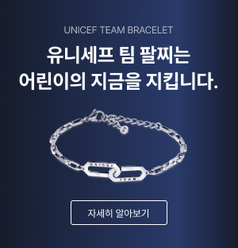
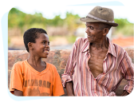

정기후원
매달 일정 금액을 꾸준히 후원해 주시면 어린이에게 더 큰 도움을 줄 수 있습니다.
전 세계 어린이들의 변화, 후원자님이 있어 가능합니다.
매달 일정 금액을 꾸준히 후원해 주시면
어린이에게 더 큰 도움을 줄 수 있습니다.
정기후원은 안정적인 후원금 확보로 어린이의 행복한 삶을
위한 장기적인 지원을 가능하게 해 줍니다.
유니세프 정기후원자가 되려면
-
첫 정기후원 감사 및 안내
감사의 마음을 담아 후원자안내서, 후원 신청내역 엽서, 스티커를 보내드립니다.
-
후원자 소식지 제공
시기별 사업소식(소식지, 뉴스레터) 및 사업보고서를 보내드립니다.
-
연차보고서 제공
방송/온라인 캠페인 결과보고서 및 기타 사업 현장의 생생한 변화 이야기를 알려드립니다.
-
어린이 정기후원 감사인사
어린이 음악회, 봉사활동, 후원자모임 등 초청 행사에 후원자님을 초대합니다.
-
감사카드/감사패
후원 1주년, 5주년, 10주년 등 특별 기념일을 맞아 감사카드 및 기념증서를 보내드립니다.
-
기부금 영수증
나의 후원 또는 국세청 연말정산간소화 서비스에서 기부금영수증을 발급 받을 수 있습니다.
-
후원자 해외 현장 방문
학교,해외기관,후원시설 등 후원을 통해 만들어진 해외 현장에 후원자님을 초대합니다.
-
정기후원자 초청행사
유니세프에서 주관하는 시기별 행사에 정기후원자님을 초대합니다.
하지만 여전히 도움이 필요한 어린이가 많습니다.
현재 전 세계 어린이 10명 중 1명은 초등 교육을 받지 못하고,
3명 중 1명은 10세가 될 때까지 글을 읽거나 이해하지 못하는 어린이는 전 세계 어린이의 64.3%로 추정됩니다.
후원금, 이렇게 사용됩니다.
국내사업
유니세프는 한국의 아동들이 보다 나은 환경에서 성장할 수 있도록 지원하고 있습니다.
-
교육지원
한국 내 저소득 가정의 아동들을 위한 교육 지원과 장학금 제공, 학습 도구 및 자료 지원 등을 통해 교육 기회를 보장하려 합니다.
-
건강과 영양
아동의 건강과 영양 상태를 개선하기 위한 다양한 프로그램을 운영합니다. 여기에는 예방접종 캠페인, 건강검진,영양 교육 등이 포함될 수 있습니다.

-
위기대응
자연 재해나 기타 위기 상황에 처한 아동들을 위한 긴급 지원과 복구 활동을 합니다. 예를 들어, 재난 발생 시 아동들을 위한 긴급 구호 활동을 진행합니다.
-
아동권리 증진
아동의 권리를 보호하고 증진하기 위한 캠 페인과 교육을 진행하며, 아동 보호를 위한 정책 개선에 기여합니다.
해외사업
유니세프는 전 세계 아동의 권리와 복지를 증진하기 위해 다양한 프로그램과 프로젝트를 운영하고 있습니다.
-
긴급 구호
전쟁, 자연 재해, 전염병 등 위기 상황에 처한 아동들에게 신속한 구호 물자, 식량, 의약품, 임시 거처 등을 제공합니다. 예를 들어, 시리아 내전, 로힝야 난민 문제 등에서 긴급 지원을 했습니다.
-
교육 지원
교육 접근성이 낮거나 교육 기회를 박탈당한 아동들을 위해 학교 건설, 교과서 및 학습 자료 제공, 교사 훈련 등의 지원을 합니다. 특히 분쟁 지역이나 재개발 국가에서 교육을 통해 아동의 미래를 밝히려는 노력을 기울이고 있습니다.
-
건강과 영양
예방접종 캠페인, 영양 보충, 모자 보건 서비스 등을 통해 아동의 건강과 영양 상태를 개선하려고 합니다. 전염병 예방과 치료, 영양 실조 예방을 위한 다양한 프로그램을 운영합니다.
-
아동 보호
아동 노동, 성착취, 폭력 등으로부터 아동을 보호하기 위한 프로그램을 운영합니다. 이를 통해 아동의 안전과 권리를 보호하고, 법적 보호와 지원 체계를 강화합니다.
-
식수와 위생
안전한 식수와 위생 시설의 접근성을 높이기 위해 식수 공급, 위생 교육, 위생 시설 건설 등을 진행합니다. 특히 물 부족이나 오염 문제가 심각한 지역에서 활동합니다.
-
옹호 및 정책 개선
아동 권리와 관련된 정책의 개선을 위해 정부와 협력하고, 아동 권리를 보호하는 법과 제도를 강화하기 위한 활동을 합니다. 또한 아동의 목소리를 사회에 전달하고, 정책 결정 과정에 반영되도록 노력합니다
